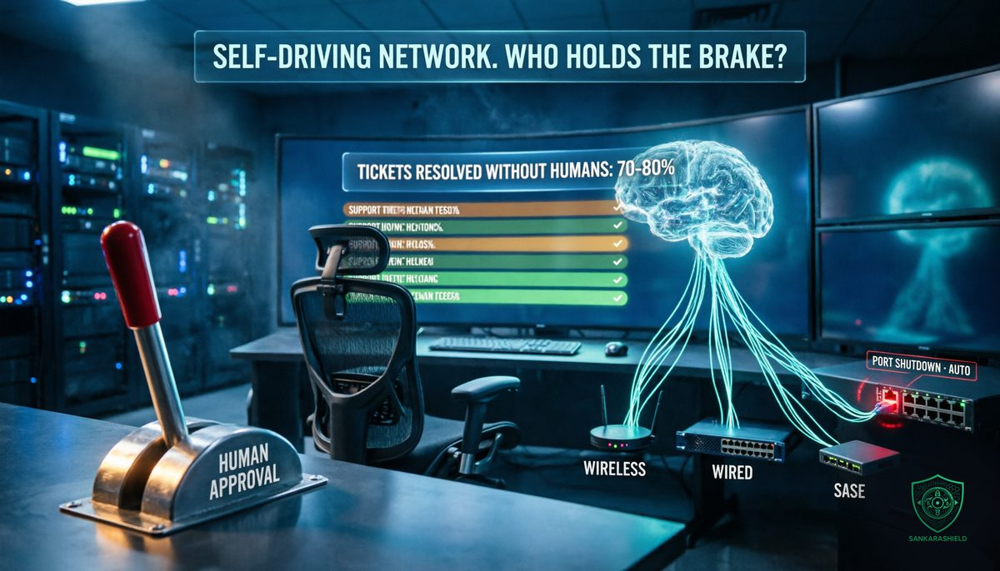

No human required: HPE's self-driving network promise, and who holds the brake.

"Within two to three years, we'll have no issues that require humans."
That is Rami Rahim, the former CEO of Juniper Networks and now president and general manager of HPE's networking business, in an interview with The Register published on Sunday 11 October. He says HPE is already at "probably around 70 to 80 percent of all tickets" that do not require human intervention.
Seventeen days later, on 28 October, HPE took the next concrete step. EdgeConnect, its SASE platform combining SD-WAN and Security Service Edge, is being brought into HPE Mist and HPE Aruba Central, under a single AI layer called Marvis.
The marketing name for this is the "self-driving network." For network and security teams, the real question is simpler: what exactly is the machine allowed to do on its own, and who can stop it?
WHAT HPE ANNOUNCED
ONE FRAMEWORK FOR THE WHOLE EDGE — wired access, wireless LAN and SASE managed through a single approach, across campus, branch, WAN, cloud and security environments.
MARVIS FOR SASE CUSTOMERS — EdgeConnect customers gain access to HPE Marvis, described as HPE's AI engine and assistant across its networking portfolio, with automated operational actions and digital experience monitoring.
A "LARGE EXPERIENCE MODEL" — a model intended to predict problems affecting applications such as Zoom and Teams before users notice them.
NEW FEATURES FOR MIST AND CENTRAL — application-aware routing, WAN optimisation, integrated security and SSE integration.
THE TIMELINE — EdgeConnect support in HPE Mist is scheduled for 2026; support in Aruba Central is planned for the first half of 2027.
Analyst Bob Laliberte of Liberte Research Group called Marvis "a common intelligence layer," and noted that HPE is combining Mist, Aruba Central and the Juniper portfolio without forcing disruptive migrations. Zeus Kerravala of ZK Research described the convergence of SASE, wired and wireless as "a logical and necessary evolution for enterprise networking."
THE JUNIPER EFFECT
HPE closed its acquisition of Juniper in July 2025, in a deal of about $14 billion. According to Rahim, Aruba and Juniper access points can now be managed with either vendor's tools, and network fabric management has been integrated with OpsRamp, HPE's hybrid cloud observability platform.
The ambition is not subtle. HPE CEO Antonio Neri said on an earnings call: "we are at the core becoming a networking company." Rahim adds that networking is growing in importance, particularly for AI data centres.
For customers running mixed Aruba and Juniper estates, that is welcome news. It also means more of the network converges on one vendor's cloud and one AI engine, which matters for the security discussion below.
WHAT THE CLAIM REALLY SAYS
Strong claims deserve a careful read.
THE NUMBER IS AN ESTIMATE — "70 to 80 percent" is Rahim's own estimate. The interview presents no supporting data, no ticket volumes and no customer counts.
THE TIMELINE IS LONGER THAN THE HEADLINE — The Register's headline says two years; the quote says "two to three years."
HARDWARE STAYS HUMAN — Rahim describes hardware swaps as the exception. His vision is that the system orders the replacement part, and an intern can install it.
THE METRIC IS USER PAIN — the success measure he proposes is the number of "the Wi-Fi sucks" tickets and how quickly they are resolved, because Wi-Fi is where users feel most problems first, whatever the real root cause.
The Register itself summed up the obvious caveat in one line: "Of course he would say that." A vendor selling AI-driven operations has every reason to describe its automation rate generously.
WHY IT STILL MATTERS
Discount the marketing, and a serious argument remains. Rahim puts it this way: "We're quickly approaching a realm in which every enterprise has way more agents working than humans working."
Agents, devices and machine-to-machine traffic grow faster than any network operations centre can hire. A NOC that handles every alert by hand does not scale to that world.
Rahim's answer is gradual trust. He compares AIOps adoption to riders accepting self-driving taxis, and to the path cars took from automatic transmissions to cruise control and lane assist: each safe automation builds confidence in the next. In practice, HPE lets operators enable automated actions one feature at a time, with something as small as bouncing a switch port suggested as a starting point.
That is the right model. Turning on automation action by action, with a clear scope, is how mature teams should adopt it. It is also exactly where the risk lives.
THE SECURITY QUESTION
An AI that can bounce a port can also shut one down. An AI that can push a configuration can push a bad one, to every site at the same moment. And an AI-driven management cloud that controls wired, wireless and SASE together is, by definition, a single control point for the entire edge.
Three risks deserve attention before anyone enables auto-remediation
BLAST RADIUS — a human makes one mistake on one device. An automated policy can repeat the same mistake across hundreds of sites in seconds.
THE MANAGEMENT PLANE AS A TARGET — whoever controls the cloud console, its admin accounts or its API keys now controls the network. Management planes and orchestrators have been prime targets for attackers all year.
LOST VISIBILITY — if the machine fixes things quietly, the team may stop seeing the patterns behind the tickets, including the ones that are actually early signs of an intrusion.
WHAT TO DO BEFORE YOU TURN IT ON
SCOPE IT — start with reversible, low-impact actions only: port bounce, RF and channel tuning, client reconnects. Keep routing, firewall and SASE policy changes behind human approval.
LOG IT — send every automated action to your SIEM with the device, the change, the time and the reason the AI gave, so that every change can be audited like a human change.
CAP IT — limit the blast radius: one site or one VLAN at first, a maximum number of automated changes per hour, and automatic suspension if that limit is reached.
PROTECT IT — treat the management cloud as tier-zero: phishing-resistant MFA for every admin, least-privilege roles, short-lived and scoped API keys, and alerts on every new admin account or token.
KEEP A WAY BACK — tested configuration rollback, plus out-of-band access to core devices for the day the automation breaks the very path it uses to manage the network.
REVIEW THE TRENDS — once a month, have an engineer review what the AI fixed. Recurring auto-fixes on the same port or site are a symptom to investigate, not a success to celebrate.
WHAT TO READ WITH CARE
The quotes from Rami Rahim, the 70 to 80 percent figure, the two-to-three-year timeline, the Juniper integration details and Antonio Neri's quote come from The Register's interview by Simon Sharwood, published on 11 October 2026. The EdgeConnect, Mist, Aruba Central and Marvis announcement, its timeline and the analyst quotes come from IT Brief's report of 28 October 2026. HPE has not published data supporting the automation rate, and no independent study has measured it.
THE UNCOMFORTABLE PART
Self-driving networks are coming, and for repetitive tickets that is good news. Nobody became a network engineer to reboot access points at 2 a.m.
But automation does not remove responsibility. It moves it: from the engineer who typed the command to the team that decided what the machine may do alone, how far it can reach, and how it is stopped. That decision deserves the same rigour as a firewall policy.
So before the next vendor demo, ask the question that matters: if the AI made the wrong change on every site tonight, who would notice first, and how fast could you take the wheel back?